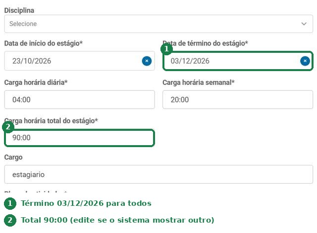
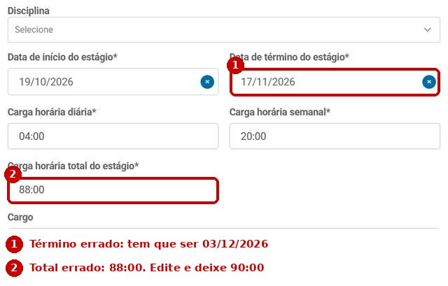
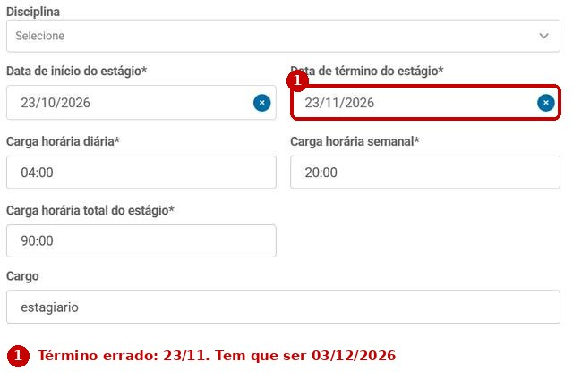

Este simulador ajuda o seu TCE a ser validado mais rápido. Faça a simulação com os seus dados, siga os passos de 1 a 6 e, no final, vá ao seu Aluno Online preencher o cadastro real.
Escolha o dia em que você vai cadastrar o TCE. Se for hoje, deixe como está.
Horas em cada dia da semana. “–” é dia sem estágio. Máximo 6 h por dia e 30 h por semana.
Toque no dia em que você começa a estagiar. É o dia em que a Carta de Autorização já está com você ou depois dele. As horas só contam a partir da Carta.
A UNIPAR não tem expediente administrativo à noite, sábado, domingo e feriado. Esses dias contam nos 10 dias, mas ninguém assina nem valida neles.
Estes são os valores da sua simulação. Use como modelo no cadastro real.
Confira todos os dados antes de cadastrar. Depois de cadastrado, o aluno não consegue alterar. Se precisar corrigir algo, como um e-mail, a troca deve ser formalizada pela Central de Relacionamento do Estudante, via WhatsApp.
Término: 03/12/2026 para todos.
Carga horária total: o Workalove calcula sozinho pelas datas e pela jornada e pode mostrar 88:00, 104:00 ou outro valor. Esse campo é editável: toque nele, apague e digite 90:00. O total do TCE é 90:00, nunca menos.



Toque em cada item quando tiver conferido.
Vá ao seu Aluno Online e preencha os dados reais:
Aluno Online › Porta de Carreiras › Gestão de Estágio
Use os valores que você simulou. Depois de cadastrar, acompanhe o status aqui:
Toque em cada etapa para marcar onde você está. Depois do cadastro, volte aqui para acompanhar.
Por que 10 dias? Pelo histórico de tempo de validação, correção e assinatura, o prazo ficou em 10 dias. Pode sair antes, mas depende de vários fatores, principalmente dos ajustes necessários e das assinaturas.
3 ou 4 atividades, uma por linha. Cada uma: verbo no infinitivo + o quê + onde ou como.
Exemplo: “Acompanhar a execução da rede de drenagem na obra.” Não coloque horas nem dias, esses dados já estão em outro campo.
Como você marcou que vai estagiar em feriado, cole esta frase no final do plano:
Se você não vai estagiar em feriado, não precisa escrever nada sobre isso.